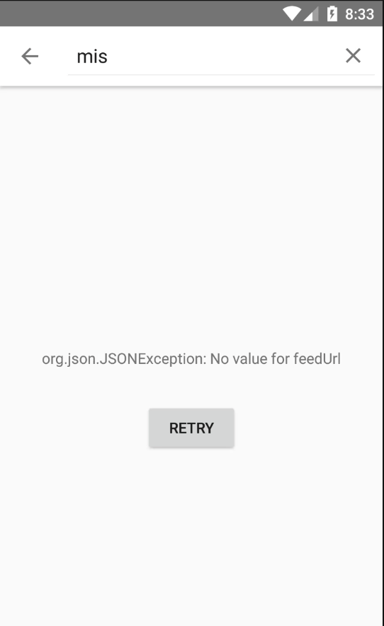
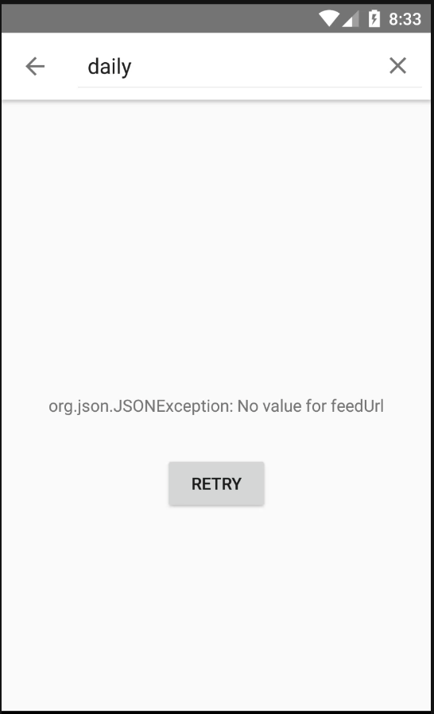

Bug summary:
search function in SEARCH ITUNES not working properly
Observed Behavior (a description of what happened with the app):
I searched "mis" in SEARCH ITUNES, trying to add a new podcast, but it shows "org.json.JSONException: No value for feedurl".
Expected Behavior (a description of what you expected to happen):
Show the list of podcasts that contains "mis" in their titles.
Steps to Reproduce (the steps to reproduce the problem):
1. click the three lines at the top left corner, click "Add Podcast"
2. click "SEARCH ITUNES"
3. click the magnifyer icon on the top right corner, search "mis" there
Additional information:
Sometimes, the search function works, but sometimes just not. Even when I see there's "The Daily" podcast there, but if I search "daily", it gives me no results.
Attachments:
 